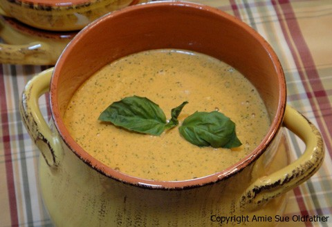

Spicy Broccoli Cheese Soup

~ raw, vegan, gluten-free ~
Kiss my spatula and call me home for dinner! Down-home comfort food, that is exactly what this Broccoli Cheese Soup is all about!
I wish I had some great soup story to share, but I don’t. I didn’t grow up working 10 hours a day in the garden picking broccoli till my fingers bled, nor did I carry it 10 miles uphill both ways.. but I did grow up eating Cambell’s canned soup!
I used cashew nuts and hemp seeds in this recipe. You could use all cashews or all hemp seeds if you desire. The soaked cashews add a real creaminess to the soup. The hemp seeds add tons of nutrients!
You can read all about them here. This soup is thick so if you want a thinner soup just add in more almond milk. It could also double as a dip for veggies or flax crackers if you cut down on the liquid used in the recipe.
Ingredients:
- 6 cups broccoli florets
- 1 cup raw cashews, soak 2 hours
- 1 cup hemp seeds
- 2 1/2 large red bell peppers
- 1 cup almond milk
- 1/4 cup fresh lemon juice
- 1 cup nutritional yeast
- 1 tsp of red chili pepper flakes
- 1 tsp Himalayan pink salt
Preparation:
- Cut all the florets off of the broccoli stalks (save for your next salad or juice them). Place in a medium-size bowl and cover with hot water to slightly blanch and soften. Allow the broccoli to sit while you make the sauce.
- Chop the red pepper into chunks then add to a blender with the almond milk and lemon juice. Blend until the pepper is broken down nicely. If you blend everything at once, the red pepper won’t break down fully. I speak from experience. :)
- Add the cashews, hemp seeds, red chili pepper flakes and salt and again blend until smooth. Continue blending until all the grittiness is gone. Before adding in the remaining ingredients, test the soup for texture.
- Add the nutritional yeast and broccoli and blend again. You could hold back some of the florets and put them in at the end if you want a chunkier texture. Doing it in stages like this helps you to get the smooth consistency without over-heating it.
- Serve! This soup can be eaten chilled, at room temp, warmed in the dehydrator at 118 degrees for 1 hour or heated in a pan (if being raw isn’t a factor).
- Store in an airtight glass container in the fridge.
Warming Suggestions:
- Allow the soup to warm to room temperature and enjoy.
- Place the serving bowl in hot water, allowing it to heat up before adding the soup. This will help take a little extra chill off of the soup and make it cozy warm to hold in your hands.
- Pour a serving size of soup in a mason jar, place lid on top and tighten… immerse the jar in hot water till it warms the soup to your liking.
- Pour into a small saucepan and heat on the stove. Use your fingertip as the temperature gauge; it shouldn’t get too hot for your finger. You can also use a thermometer gauge if this concerns you.
- Dehydrator – if you have a “box” shaped dehydrator such as the Excalibur, pour the soup into a wide mouth baking dish and turn the heat to 145 (F) degrees. Warm for 30-60 minutes. You can also place the temperature at 115 degrees and heat for 3-4 hours. You will need to gauge this. The more soup that exposed to the air, the quicker it will warm.

© AmieSue.com